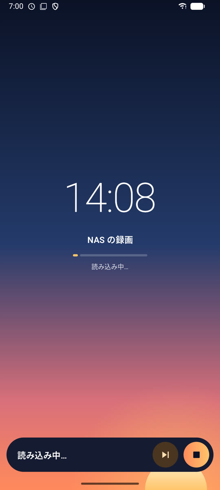
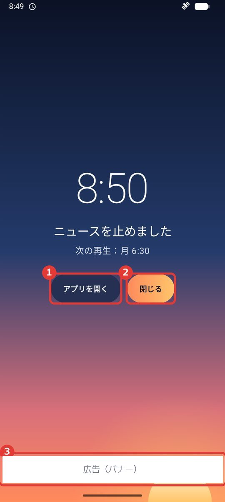
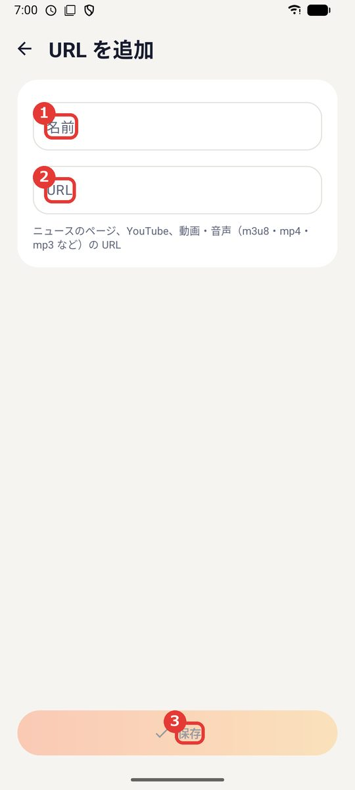
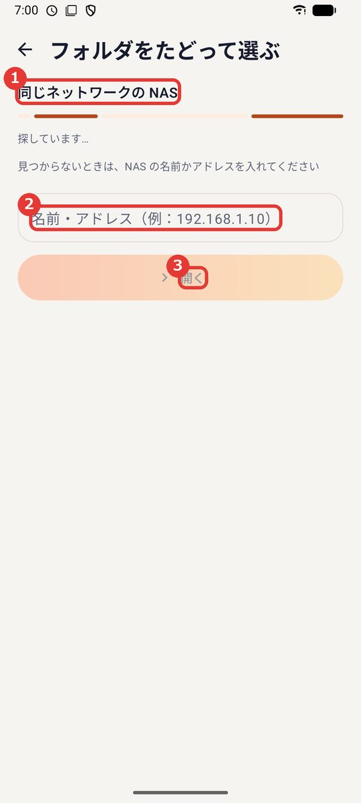
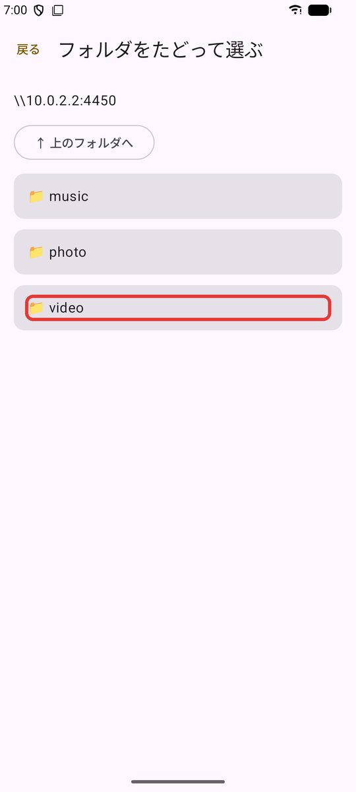
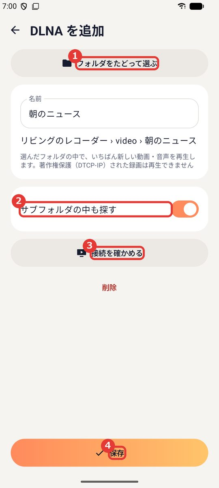
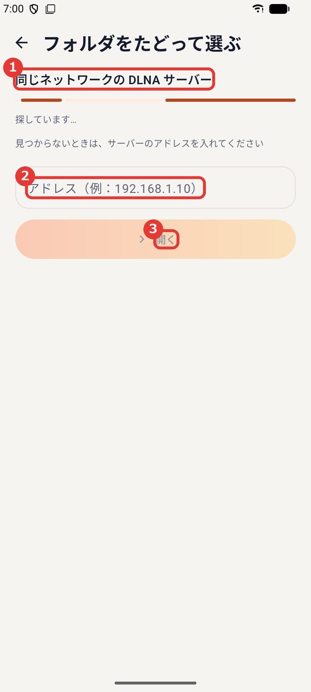
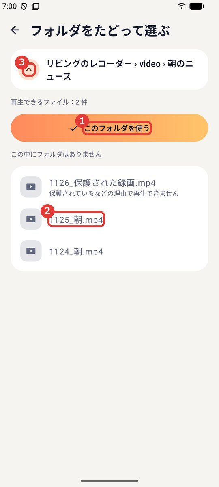
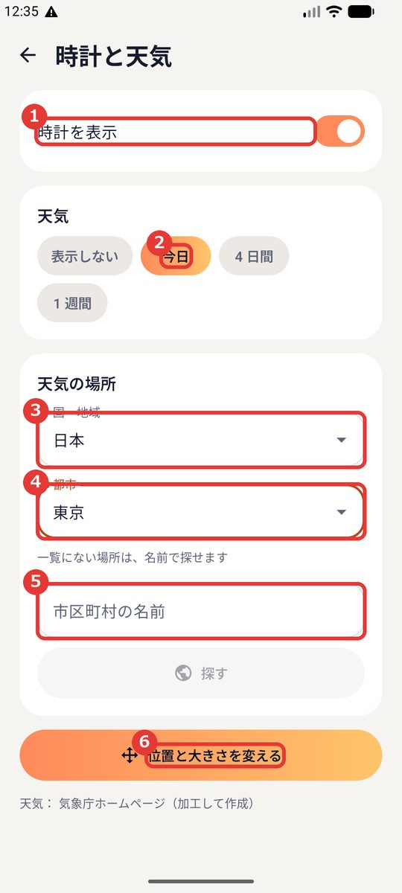
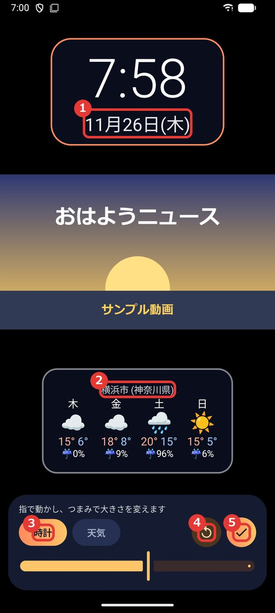

おはようニュースタイマー の紹介ページへ戻る
おはようニュースタイマー の使い方
おはようニュースタイマー（Good Morning News Timer）は、決めた時刻にニュースの再生を自動で始めるアプリです。
この説明は バージョン 1.1.0 の画面に合わせています（2026年11月27日。再生を止めたあとの画面と広告を追加。1.0.0 にはありません）。画面はこれから変わることがあります。画像の赤い枠と番号は、説明の番号と同じところです。
- はじめに（許可）
- ホームの画面
- 予定を作る
- 再生の画面
- 情報源
- URL を追加する
- NAS を追加する
- DLNA を追加する
- 時計と天気
- 設定
- よくある質問
1. はじめに（許可）

- 上に出る案内の「許可する」を押し、開いた画面で許可します
- 許可が済んだら、「＋ 予定を追加」で予定を作ります（3.）
- 通知：時刻に再生を始めるために必要です
- 全画面の通知：案内が出たときだけ必要です。画面が消えているときに再生の画面を出します
- ほかのアプリの上に表示：ほかのアプリの使用中も自動で始めるための許可です（任意）。許可しないときは、通知を押すと始まります
2. ホームの画面

- 次に再生する曜日と時刻、最初に試す情報源と、それまでの残りの時間です
- 予定を押すと編集できます。右のスイッチで ON / OFF を切り替えます
- ▶：その予定の内容を、すぐに試せます
- 「情報源」：再生するページ・URL・NAS・DLNA を見たり足したりします。下のタブで「ホーム」「情報源」「設定」を切り替えます
3. 予定を作る
「＋ 予定を追加」を押します。
- 時刻を押し、時計の窓（右）で時と分を選んで「OK」を押します
- 「曜日」：再生する曜日を押して選びます
- 「情報源」：使うものを押すと番号が付きます。番号の順に試します。もう一度押すと外れます
- 上向きの矢印：試す順を上げます

- 「音量」：再生するときの音量です。いちばん左にすると、端末の音量のままになります
- 「自動で止める」：始まってから止めるまでの時間です
- 「保存」を押します。作った予定は「削除」で消せます
4. 再生の画面


音が出るまでは、夜明けの空と時計（左）が出ます。画面を押すと、後ろのページを見られます。音が出ると再生の画面（右）に変わります。
- いま再生している情報源やファイルの名前です
- 矢印が 4 つのボタン：時計と天気の位置と大きさを変えます（9.）
- 次の情報源のボタン：予定の次の情報源に切り替えます
- 停止のボタン：再生を止めて、音量を元に戻します
- 45 秒ほど待っても音が出ないときは、自動で次の情報源に進みます
- 予定の情報源がどれも再生できないときは、代わりにアラームを鳴らします。停止のボタンで止まります
止めたあとの画面

停止のボタンで止めると、いまの時刻と次の再生の時刻が出ます。
- アプリを開く：ホームの画面を開きます
- 閉じる：この画面を閉じます。何もしなければ 2 分で閉じます
- 広告が出ます
- ロック画面の上で止めたときや、自動で止まったとき・最後まで再生したときは、この画面を出さずに閉じます
- 再生中とロック画面の上には、広告を出しません
5. 情報源

- 「URL を追加」：6. へ
- 「NAS を追加」：7. へ
- 「DLNA を追加」：8. へ
- ▶：その情報源を試します
自分で足したものは、押すと直したり消したりできます。最初からあるものは直せません。
6. URL を追加する

- 「名前」：一覧に出す名前です（空でもかまいません）
- 「URL」：ニュースのページ、YouTube、動画・音声（m3u8・mp4・mp3 など）の URL を入れます
- 「保存」を押します。予定で使うには、予定の編集で選びます
ページによっては、自動で再生が始まらないことがあります。▶ で試してから予定に使ってください。ログインが必要なページには向きません。
7. NAS を追加する
「情報源」の「NAS を追加」を押します。画像のアドレスは見本です。

- 「フォルダをたどって選ぶ」：NAS の中を見ながらフォルダを選びます（下の手順）
- 「サブフォルダの中も探す」：ON なら、中のフォルダも 4 段まで探します
- 「接続を確かめる」：つながると、再生する最新のファイルの名前が出ます
- 「保存」を押します
NAS を選ぶ

- 同じネットワークの NAS が見つかると、下に並びます。使うものを押します
- 見つからないときは、NAS の名前かアドレス（例：
192.168.1.10）を入れます
- 「開く」を押します
「NAS にログイン」の窓が出たら、NAS のユーザー名とパスワードを入れて「OK」を押します。
フォルダを選ぶ


共有フォルダ（左）を押して中に入り、使うフォルダまで順に進みます（右）。
- 「このフォルダを使う」：いまのフォルダに決めます
- 中の新しいファイルの名前が 5 件まで出ます。目当てのフォルダかどうかの目印にしてください
- 上向きの矢印：1 つ上のフォルダに戻ります。端末の「戻る」でもかまいません
- フォルダの場所は、
\\192.168.1.10\video\news のように直接入れることもできます
- 更新日時がいちばん新しい動画・音声を再生します。録画中のものを避けるため、最後の更新から 2 分たったものを優先します
- 端末は NAS と同じネットワーク（自宅の Wi-Fi など）につないでください。NAS の側で SMB（Windows ファイル共有）の 2 以上を有効にしてください
- テレビの録画（MPEG-2 TS など）は、端末によって再生できないことがあります
8. DLNA を追加する
レコーダー・NAS・PC などの DLNA サーバーのフォルダを選ぶと、その中のいちばん新しい動画・音声を再生します。「情報源」の「DLNA を追加」を押します。

- 「フォルダをたどって選ぶ」：サーバーの中を見ながらフォルダを選びます（下の手順）
- 「サブフォルダの中も探す」：ON なら、中のフォルダも 4 段まで探します
- 「接続を確かめる」：つながると、再生する最新のものの名前が出ます
- 「保存」を押します
サーバーを選ぶ

- 同じネットワークのサーバーが見つかると、下に並びます。使うものを押します
- 見つからないときは、サーバーのアドレス（例：
192.168.1.10）を入れます。機器の説明の URL（http:// で始まるもの）でもかまいません
- 「開く」を押します
フォルダを選ぶ

- 「このフォルダを使う」：いまのフォルダに決めます
- 中の新しいものの名前が 5 件まで出ます。保護された録画には「再生できません」と出ます
- 上向きの矢印：1 つ上のフォルダに戻ります
- レコーダーで録画した地上波・BS などの、著作権保護（DTCP-IP）された録画は再生できません。最新のものを選ぶときも飛ばします
- 「最新」は、サーバーが知らせる日付で決めます。日付がなければ名前の中の日付（
2026-11-26、20261126_0700 など）、それもなければ並びの最後のものを選びます
- 予定の時刻に、サーバーの電源が入っていて、同じネットワークにつながっている必要があります。サーバーのアドレスが変わっても、同じ機器を探し直します
- 動画の形式（MPEG-2 など）によっては、端末で再生できないことがあります
9. 時計と天気
再生の画面に、時計と天気予報を重ねて出せます。「設定」の「時計と天気」を押します。

- 「時計を表示」：時刻と日付を出します
- 「天気」：「表示しない」「今日」「4 日間」「1 週間」から選びます
- 「市区町村の名前」を入れて「探す」を押し、出てきた中から天気の場所を選びます。選ぶまで天気は出ません
- 「位置と大きさを変える」：下の画面を開きます
位置と大きさを変える
設定の「位置と大きさを変える」のほか、再生の画面の矢印が 4 つのボタンからも開けます。再生の画面からなら、映像を見ながら合わせられます。

- 時計を指で動かします
- 天気を指で動かします
- 「時計」「天気」：大きさを変えるほうを選び、下のつまみを左右に動かします
- 丸い矢印：最初の位置と大きさに戻します
- チェック：終わります
- 位置と大きさは、縦向きと横向きで別々に覚えます。画面からはみ出す大きさにはなりません
- 天気の数字は、赤が最高気温、青が最低気温（℃）、傘が降水確率です。再生の画面を出しているあいだ、30 分ごとに新しくします
- 時計や天気の上を触っても、後ろのページを操作できます
- 天気予報は、日本の場所は気象庁ホームページ（加工して作成）、それ以外は MET Norway（CC BY 4.0）のデータです（バージョン 1.1.0 から。1.0.0 は Open-Meteo.com）
10. 設定

- 「時計と天気」：9. へ
- 「言語」：12 言語から選べます。「自動」なら端末の言語です
- 「プライバシーポリシー」：このサイトのページを開きます
- 広告が出ます
同意が必要な地域では、「広告のプライバシー設定」の行も出ます。広告の同意を変えられます。
11. よくある質問
時刻になっても始まりません
ホームの画面に許可の案内が出ていないか、予定のスイッチが ON かを確かめてください。端末の設定でアプリを「強制停止」すると、次にアプリを開くまで再生は始まりません。端末の電源が切れているときも始まりません。
音が出ません
予定の「音量」を上げるか、端末のメディアの音量を確かめてください。イヤホンや Bluetooth につながっていると、そちらから音が出ます。
通信量はかかりますか？
動画の再生は通信量が多いため、Wi-Fi での利用をおすすめします。つけたままにしないよう、「自動で止める」も使ってください。
データはどこに保存されますか？
予定・情報源・設定は、この端末の中にだけ保存します。NAS のパスワードは暗号化します。アプリを削除すると消えます。詳しくはプライバシーポリシーをご覧ください。
お問い合わせ
DNGG-studio：dngg.studio@gmail.com
本アプリは各放送局・YouTube とは関係のない、非公式のアプリです。各局の名称・番組名、YouTube は、それぞれの会社の商標です。
紹介ページへ戻る